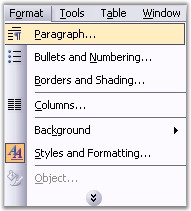
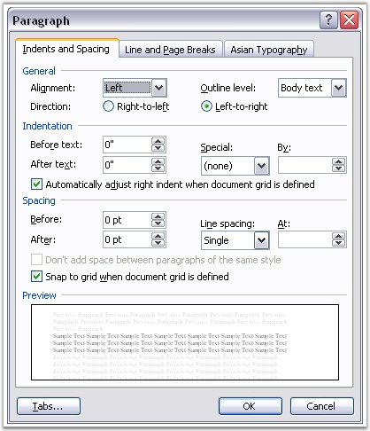

WParagraphFormat class represents paragraph formatting in the Word document. To apply paragraph formatting in MS Word, open Format menu and click Paragraph.

Figure 72: Paragraph Option in Format Menu

Figure 73: Paragraph Dialog Box
WParagraphFormat class gets or sets the formatting for the paragraph. Tabs property returns the collection of tabs.
Class Hierarchy
FormatBase
|
WParagraphFormat
Public Constructors
|
Name |
Description |
|
WParagraphFormat.WParagraphFormat () |
Initializes a new instance of WParagraphFormat class. |
|
WParagraphFormat.WParagraphFormat (IWordDocument) |
Initializes a new instance of WParagraphFormat class. |
Public Properties
|
Name |
Description |
|
AfterSpacing |
Gets or sets the spacing (in points) after the paragraph. |
|
BackColor |
Gets or sets background color of the paragraph. |
|
BeforeSpacing |
Gets or sets the spacing (in points) before the paragraph. |
|
Bidi |
Gets or sets right-to-left property of the paragraph. |
|
Borders |
Gets collection of borders in the paragraph. |
|
ColumnBreakAfter |
True if a column break is forced after the paragraph. |
|
FirstLineIndent |
Gets or sets first paragraph line indent. |
|
HorizontalAlignment |
Gets or sets horizontal alignment for the paragraph. |
|
Keep |
True if all lines in the paragraph are to remain on the same page. |
|
KeepFollow |
True if the paragraph is to remains on the same page as the paragraph that follows it. |
|
FirstLineIndent |
Gets or sets first paragraph line indent (in points). |
|
HorizontalAlignment |
Gets or sets horizontal alignment for the paragraph. |
|
Keep |
True if all lines in the paragraph are to remain on the same page. |
|
KeepFollow |
True if the paragraph is to remains on the same page as the paragraph that follows it. |
|
LeftIndent |
Gets or sets the value that represents the left indent for paragraph (in points) |
|
LineSpacing |
Gets or sets the line spacing property of the paragraph (in points) that specifies the space between two paragraphs. |
|
LineSpacingRule |
Gets or sets the line spacing rule property of the paragraph. |
|
PageBreakAfter |
True if a page break is forced after the paragraph. |
|
PageBreakBefore |
True if a page break is forced before the paragraph. |
|
RightIndent |
Gets or sets the right indent for paragraph (in points). |
|
MirrorIndents |
Gets or sets a value indicating whether the indentation type is mirror indents (Microsoft Word 2007 and 2010 specific property) |
|
[C#]
para.ParagraphFormat.OutlineLevel = OutlineLevel.Level8; |
|
[VB]
para.ParagraphFormat.OutlineLevel = OutlineLevel.Level8 |
 Tabs
Tabs